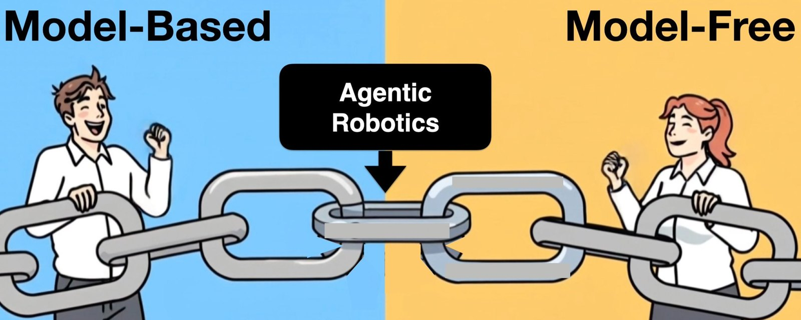

Every policy on this page is self-learned with the Agentic Robotics framework: zero lines of code from humans.
Agentic Robotics
A new approach to controlling robots
UC Berkeley AUTOLab · autolab.berkeley.edu, NVIDIA
Abstract
There have been two approaches to controlling robots: (1) model-based, where engineers model, program and tune each application, and (2) model-free, where large VLA or ACT models are trained on large datasets of physical demonstrations.
Agentic Robotics (AR) is a third approach. In Agentic Robotics, multi-agent LLM systems write, test, diagnose and iteratively improve structured robot programs, largely offline, and increasingly build the simulations those programs are tested in. This website places it between the model-based and model-free traditions, describes the pipeline we are building at AUTOLab, and lists current projects.
1What is Agentic Robotics?
Agentic Robotics uses multi-agent AI systems to write, test, diagnose, and iteratively improve structured robot programs, largely offline.
Given a task description, a frontier LLM and VLM system composes a library of clearly defined, modular robot skills, which can include VLA policies, into an interpretable robot control system. The pipeline has five components: one human demonstration as the input, three stages that do the work, and ROS2 code as the output. The three stages are (1) Real2Sim, (2) code generation with GaP and recursive self-improvement (RSI), and (3) Sim2Real. Five properties follow from this definition.
- AR does not need any demonstration data. A single real demonstration serves as evidence for building a simulation of the task, rather than as training data [5].
- Agents build the simulation. With agentic inverse physics, an agent fits a physics model that reproduces a real video. Real-world failures return to the agents as new evidence.
- Graph-based GaP harness. A manipulation system has separate modules for perception, grasp selection, motion planning, force control and failure recovery. Coding agents generate these modules, test them, and improve both the individual skills and the code for the task [2].
- Self-learning runs at scale. Because the learning happens in simulation, thousands of trials can run in parallel and faster than real time [1]. Each round, the agent runs hundreds of episodes, groups the failures and rewrites the code; Flip Anything ran 360 simulated episodes per round over 36 policy versions [6].
- Agents work offline to generate interpretable ROS2 graphs and code. Agents can be slow because the work happens offline. The robot runs exported, lightweight, ROS2-compatible code and never a frontier model in its inner control loop.
2A third path between two cultures
Robotics has two dominant cultures [3]. Agentic Robotics aims to combine the generality of frontier models with the speed, reliability and interpretability of executable robot programs.

| Model-based engineering | Model-free and VLA | Agentic Robotics | |
|---|---|---|---|
| Strength | Fast, interpretable and highly reliable | Potential to adapt more broadly | Frontier-model generality with the reliability of executable programs |
| Cost | Substantial human engineering for each new task | Not yet reliable enough for industrial uses | — |
3Agentic Robotics
Three stages connect one real demonstration, the input, to ROS2 code, the output, that runs reliably on a real robot. (1) Real2Sim: inverse physics (Block 2) builds a simulation from the demonstration. (2) Code generation: self-learning improves a Graph-as-Policy program [2] in that simulation across the variation ranges. (3) Sim2Real: real rollouts (Blocks 5 and 7) test the exported code with no agent on the robot, and failure videos go back either to the simulation or to the code.
| 1. Real2Sim | 2. Code Generation | 3. Sim2Real | |
|---|---|---|---|
| Input | Video of a human performing the task; desired cameras, sensors and robot specs; task geometry and materials | Task variation ranges; detailed parameterized Newton physics simulation | ROS2 graph / code for the desired sensors and robot |
| Tools | RSS, Newton, SuperDex | GaP skill library, GaP harness, frontier LLM, Newton engine | Real sensors and robot |
| Method | Compare the simulation with the real video and revise it | Recursive self-improvement of the robot control graph / code. Objective: maximize success rate and minimize cycle time | Iterative self-improvement using real robot rollouts with task variation; failures are reported using videos |
| Output | Detailed parameterized Newton physics simulation | ROS2 graph / code for the desired sensors and robot | Revised ROS2 graph / code for the desired sensors and robot |
4The Pipeline
4.1 Inverse physics and benchmarks for Real2Sim
RoboSimStudio: An Interactive Toolkit for Human and Agent Rapid Real2Sim of Robot Manipulation Tasks
1NVIDIA · 2UC Berkeley · *Equal contribution
An interactive toolkit on Newton that lets humans and coding agents rapidly rebuild a real manipulation task as a physics simulation (Block 2A).
VABAR: A Variational Automation Benchmark for Agentic Robotics
1Siemens · 2NVIDIA · 3UC Berkeley · *Equal contribution
Six manipulation task classes from industrial, medical and infrastructure applications, with standardized variation, two difficulty levels and a 33-skill library, on Newton.
4.2 GaP for Code Generation + RSI
GaP: A Graph-as-Policy Multi-Agent Self-Learning Harness for Variational Automation Tasks
1Bosch · 2NVIDIA · 3UC Berkeley · *Equal contribution
Multiple coding agents write, verify and optimize a robot policy represented as a graph of modular skills, then export lightweight ROS2-compatible code to real robots.
4.3 Case Studies
Flip Anything
UC Berkeley
A coding agent writes a bimanual policy to turn any tool face down, reads its own simulated failures and rewrites the code: 24.7% to 95.0% success on 24 tools over 36 versions.
Revisiting the "Push-T" Robot Manipulation Task with Agentic Robotics
UC Berkeley
Push-Alphabet: two UR5e arms push seven letter blocks into a row that spells AUTOLAB, planned by a multi-letter MPC skill inside a GaP graph.
5Limitations and open problems
Physics models remain imperfect. Active and curriculum-based self-learning need to become more efficient, and robustness and speed must be tuned in both simulation and physical systems. Safety-critical applications will require stronger verification and validation. Coding agents are slow, which suits offline policy development but not every form of real-time adaptation, and it is not yet known whether the architecture scales to open-ended generalist robots or humanoids [1].
References
- K. Goldberg (UC Berkeley). Goosebumps: a paradigm shift is occurring in robotics. Essay, September 2026.
- K. Chen3,*, S. Xie3,*, L. Fu3, J. Yu3, W. Pacini3, S. Bajamahal3, H. Kim3, J. Drake3, D. Kim3, H. Xue3, J. Francis1, C. Juette1, P. Schaldenbrand1, M. Y. Seker1, R. Wickramarachchi1, U. Yoo3, G. Wang2, A. Murali2, B. Sundaralingam2, S. S. Sastry3, S. Huang2, Y. Zhu2, L. "Jim" Fan2, K. Goldberg3. GaP: A Graph-as-Policy multi-agent self-learning harness for Variational Automation tasks. Conference on Robot Learning (CoRL), 2026. 1Bosch, 2NVIDIA, 3UC Berkeley; *equal contribution.
- K. Goldberg (UC Berkeley). A tale of two cultures: can agentic coding close the gap? Plenary, IEEE ICRA, Vienna, June 2026.
- Ambi Robotics. Agentic Robotics solves an industrial robotics problem. September 2026.
- The 100,000 year robot data gap. Science Robotics, editorial, August 2025.
- S. Xie, K. Chen, K. Goldberg (UC Berkeley). Flip Anything. Conference on Robot Learning (CoRL), Late-Breaking Result, 2026.
- S. Xie3,*, K. Chen3,*, U. Yoo3,*, X. Zhu3, M. Shen3, J. Drake3, E. Solowjow1, L. Gulich2, A. Millane2, R. Cathomen2, T. Stuyck2, S. Subramanian2, Y. Pan2, B. McGowan2, M. Benedict2, L. Fan2, Y. Zhu2, S. Huang2, K. Goldberg3. VABAR: A Variational Automation Benchmark for Agentic Robotics. 2026. 1Siemens, 2NVIDIA, 3UC Berkeley; *equal contribution.